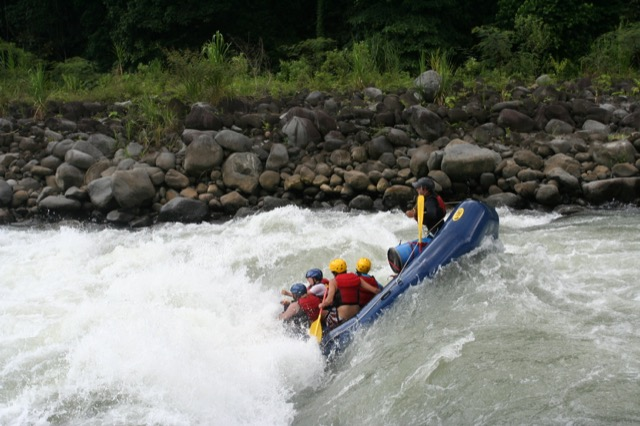

Our mission is to create safe, memorable, and energetic adventures for people who love the outdoors. We believe in teamwork, respect for rivers, and the excitement of discovering new landscapes.

Our mission is to create safe, memorable, and energetic adventures for people who love the outdoors. We believe in teamwork, respect for rivers, and the excitement of discovering new landscapes.
White Water Rafting began as a small group of guides who were passionate about mountain rivers. Over time, the company grew as families, students, and travelers looked for a fun, safe, and nature-filled experience.

Today, our team prepares every trip with careful planning, trained guides, and respect for the river. Each adventure is designed to help guests build confidence, enjoy the outdoors, and make memories with their crew.